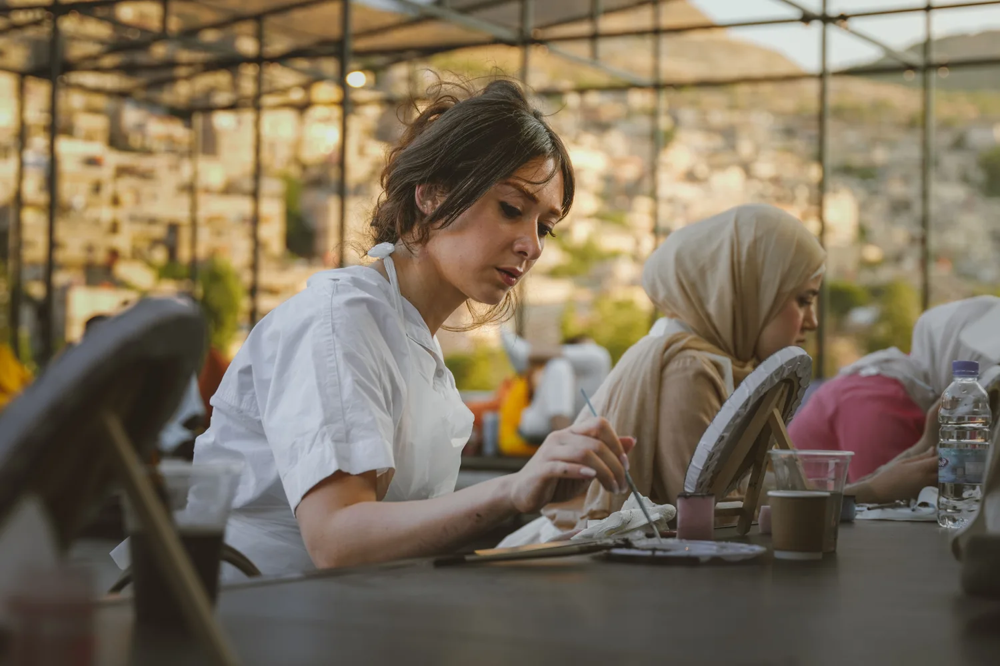
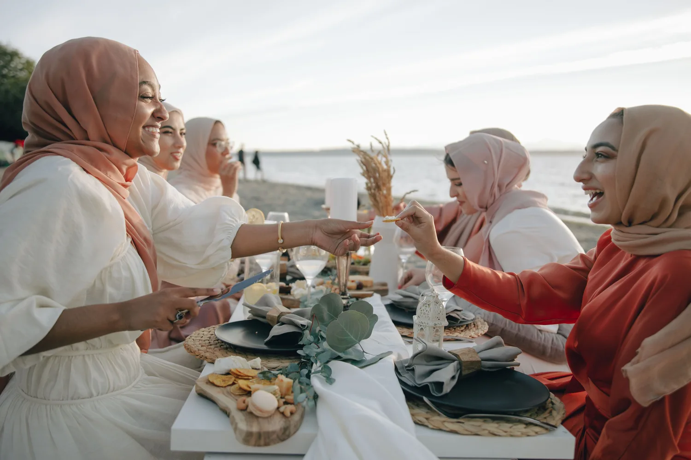
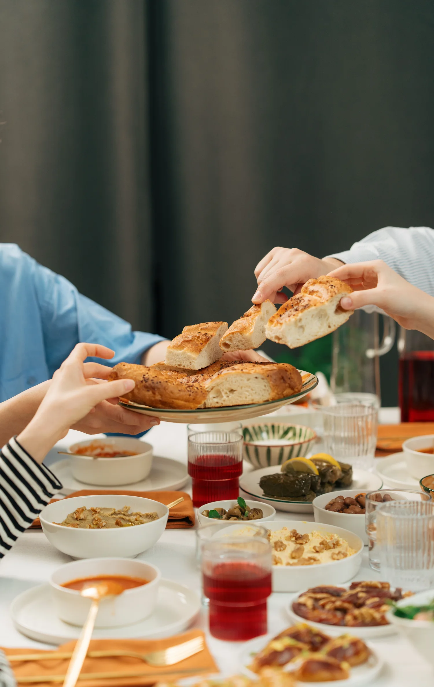
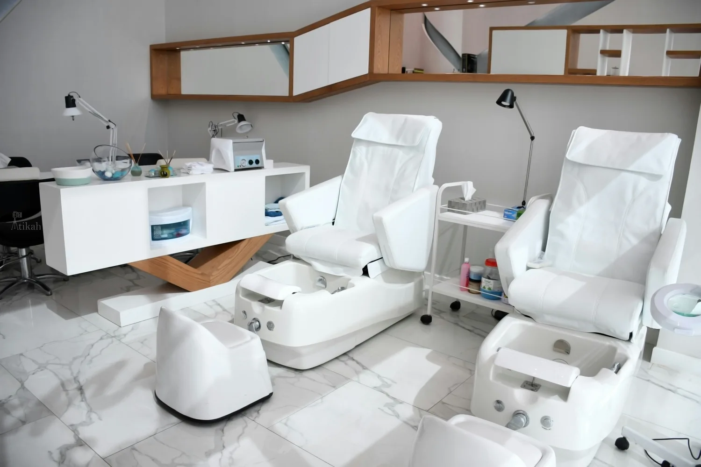
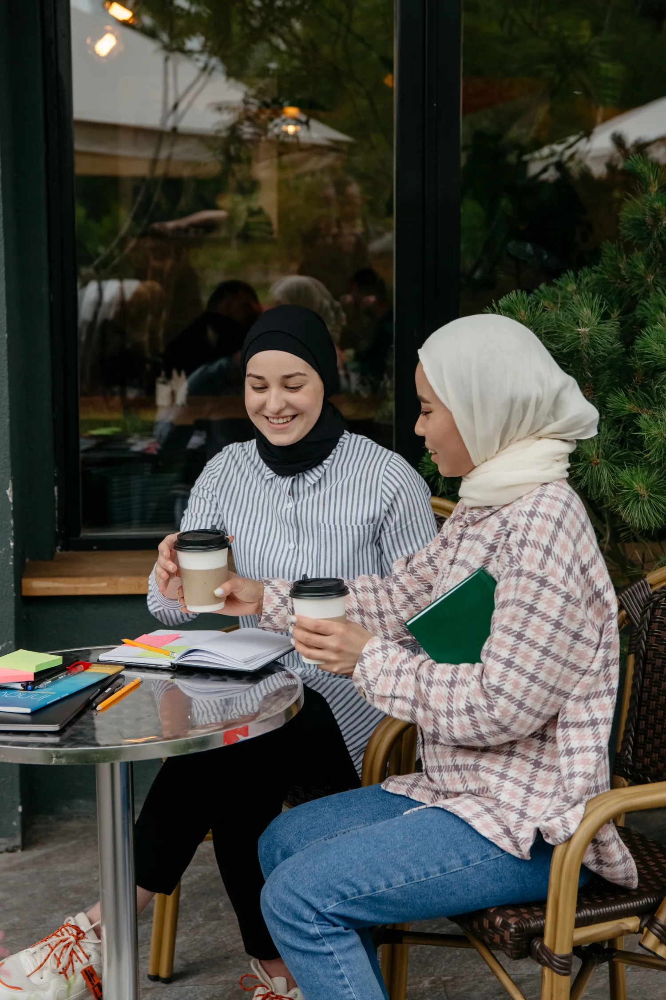

CreativeFriday evening
Sip & paint
A canvas, something lovely to sip, and a little time to make something your own.
Explore the gatheringA WOMEN-ONLY SOCIAL COMMUNITY
For the brunch that becomes a friendship. The walk that clears your head. The afternoon you finally try something new.
Come on your own.
You won’t leave feeling that way.

MAKE ROOM FOR SOMETHING LOVELY
You don’t need a plus-one, a talent, or a reason. Just pick something you’d enjoy and join us.

CreativeFriday evening
A canvas, something lovely to sip, and a little time to make something your own.
Explore the gathering
SocialSunday morning
Fresh coffee, a shared table, and the kind of conversation that outlasts breakfast.
Explore the gathering
WellbeingA weekday escape
Switch off for a few hours with a women-only spa visit and time to unwind.
Explore the gathering
MORE THAN A GROUP CHAT
Our WhatsApp circle keeps the conversation going between meet-ups. It’s where we share plans, welcome new faces, and make showing up a little easier.
In person, we make time for the simple things: a shared meal, a creative afternoon, a breath of fresh air.
Meet the idea behind Her CircleYOUR FIRST HELLO
A quiet walk or a gala night. Start with whatever feels like you.
Read our community guidelines and connect through WhatsApp.
Meet the host, introduce yourself, and let the afternoon unfold.
NEW FRIENDSHIPS START SMALL